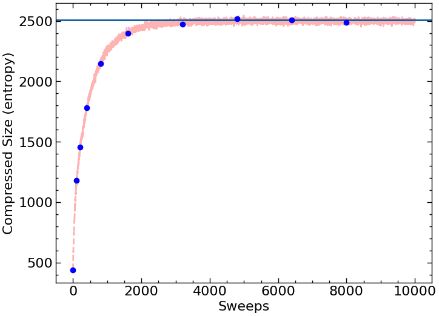

Cellular Automata
Contents
Cellular Automata#
This is just a warmup exercise to make sure you can write some code, compile, run, and submit things.
Template for Solution: https://docs.google.com/document/d/1XfuSZoOJqSgL_hP7vCQFfOfQAJBNMqMz6Bc9wS3Nxm8/edit?usp=sharing
References#
Wikipedia article on cellular automata.
Wikipedia article on a famous example of a cellular automaton, Conway’s game of life.
Cellular Automata#
In physics, you have a state of the universe and you have some rules to update the state. In classical physics, the rules are always local (even in E&M, you can write things in terms of local fields).
If your goal is to write down a model which captures these simple principles, cellular automata are the simplest way to do this. In cellular automata you have a bunch of grid points (say on a square or a honeycomb) and you have some local rules to update these cells.
Lattice Gas Automata#
In a lattice gas automata, you have two colors (black and white). You can treat the black color as the gas and the white color as empty space.
Our state, then, is going to be where the gas and empty space is.
We will start with the right half of the system filled with gas and the left half empty (i.e. the right half is black and the left half is white).
The rule then is:
randomly select a site.
randomly select a neighbor.
swap the site and the neighbor (even if they are the same color).
Even if you swap a white site with another white site you should count it as a time step.
You should use open boundary conditions (i.e. the top and the bottom don’t wrap). You have to be a bit careful about the boundaries. You don’t want to access memory not in your array.
Write a Python code that does this and prints out snapshots configurations every so often. Work on a 100 x 100 lattice.
Storing your state
To store your state a good option is state=numpy.zeros((100,100))
which you can then intialize like state[0:100,0:100]=0
which you can then access like state[i][j]
Random Numbers
For random numbers you can use numpy.random
Storing your state
To store your state a good option is
vector<vector<int > > state;
which you can then intialize like
state.resize(100);
for (int i=0;i<state.size();i++){
state[i].resize(100);
// This below sets it all to zero.
// You might want to do something fancier
// to initialize half black and half white.
std::fill(state[i].begin(), state[i].end(), 0);
}
which you can then access like state[i][j];
Random Numbers
For random numbers you want to use the C++11 random numbers. Take a look at this stack exchange article. Concerning that article, the general rule is:
Call these once per program
std::random_device rd;
std::mt19937 mt(rd());
Call this once or many times (it’s cheap and doesn’t reset the randomness):
std::uniform_int_distribution dist(0,100);
and then use
dist(mt)
to actually get the random numbers.
Entropy#
Entropy is essentially a measure of how “random” a state is. The more random a state, the more entropy it should have. A state where the “gas” is randomly placed is going to have the highest entropy. There are various ways then of measuring entropy. One approach is to take a configuration and ask how easy it is to compress it. If it compresses efficiently then it has low entropy. If it’s completely “random” then it’s hard to compress and has high entropy. After you’ve produced configurations (in memory or as a file), go ahead and load the configuration using python, compress the state, and measure its size as a function of time. This will be our heurestic for the entropy of the state (if a state is very disordered, it should be hard to describe compactly). You can use
import gzip
gzip.compress(bytes(a,'utf-8'))
where a is a long string. Alternatively, you can convert your matrix to bytes (i.e. x.tobytes() where x is an array) and do gzip.compress(x.tobytes())
Run your automata long enough to see it equilbrate. Graph as a function of sweeps (where each sweep is 100 x 100 steps).
Grading
The graded aspect of this assignment is to submit a graph with file-size as a function of sweep as well as a series of snapshots every 500 sweeps (including sweep 0). Place these graphs into your document and submit both your document and your code.
The one graph should look like this:

To produce this graph I’m using pylab. Please make sure you label your axes. To produce the snapshots you probably want to use something like pylab.matshow(myArray).